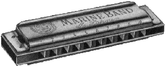

|
|
Harp-L FAQ - перевод на русский язык материалов известного списка рассылки. Переводит на русский язык Дмитрий Козлов (С.-Петербург).

Если вы хотите научиться играть на этом замечательном инструменте, обратите внимание на следующие объявления:Гармонист широко известной в узких кругах блюзовой группы King Biscuit Рома Гегарт в свободное от концертов время дает уроки игры на губной гармонике. Связаться с ним можно по телефону (095) 251-10-78.
Впервые в Росии фирма Music Hammer представляет Harper Club!!!
Обучение начинающих и опытных музыкантов.
- 1. история инструмента
2. конструкция инструмента
3. теория музыки
4. практические навыки, с дальнейшим разделением на стили: блюз, рок, кантри, джаз.
Возможны индивидуальные занятия.
Для членов клуба возможны скидки при покупке инструментов в магазине Music Hammer.
Телефоны для справок 181-92-03, 216-13-33
Еще два телефона, по которым можно узнать о клубе: 702-38-44, Сергей; 251-10-78, Роман
Вы хотите купить гармонику?